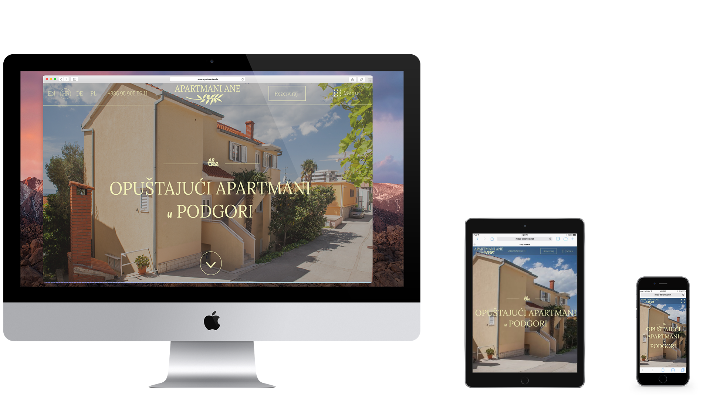

UX/UI + Web design
Apartmani Ane
About the project
In this project I was tasked with creating a brand-new design of an
outdated website. I made enitre design in
Figma.
I also made a logo for the site. I had to keep in mind that website
has be both aesthetically beautiful and user-friendly.
You can read more about my process
here (Croatian only).
